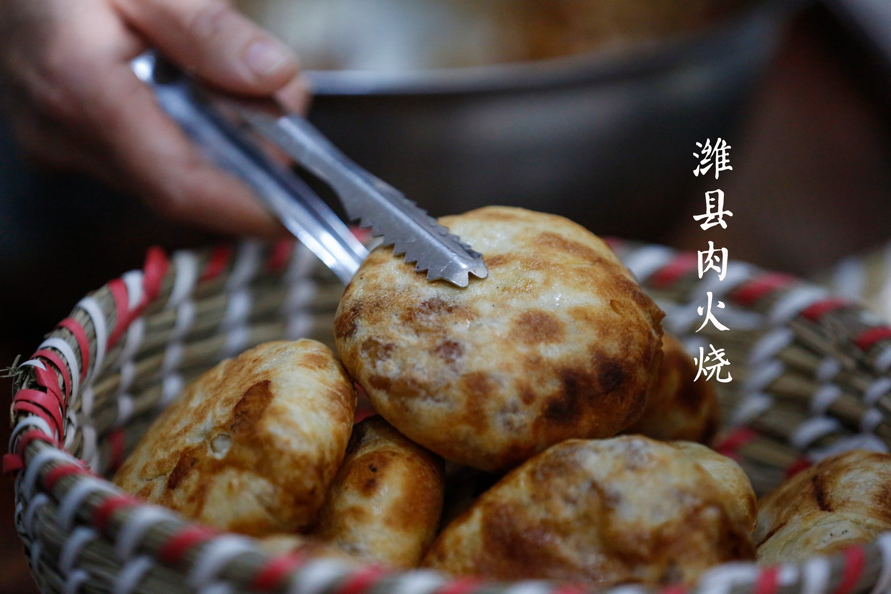
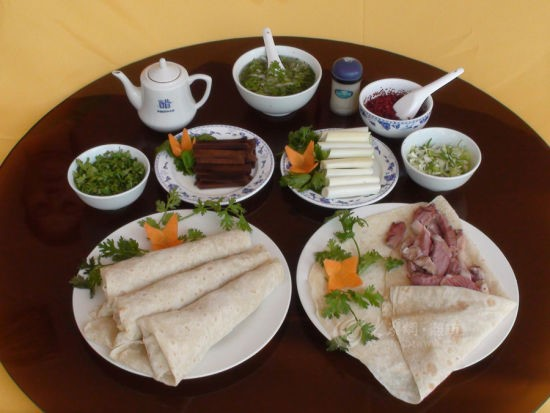
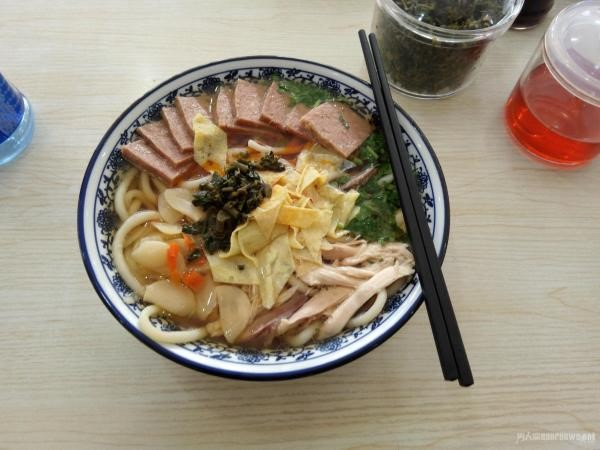
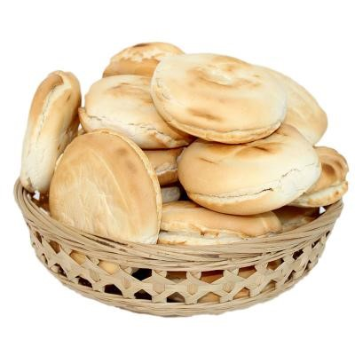
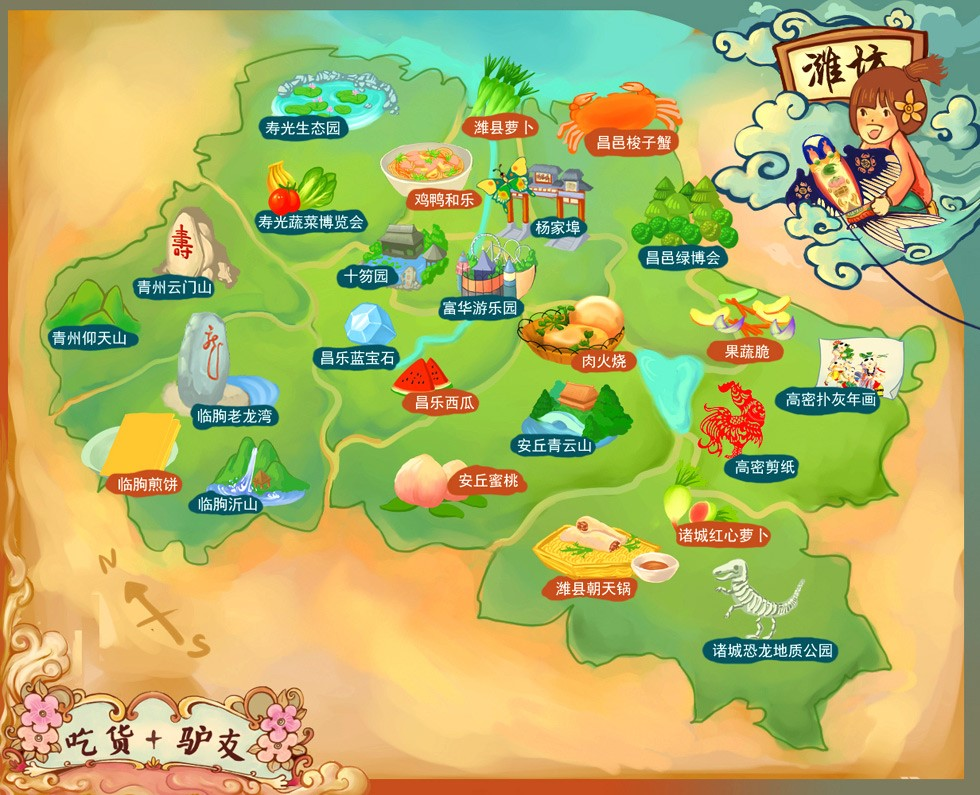

潍坊特色美食
潍坊美食融合了鲁菜的传统与地方特色，既有精致的宴席菜肴，也有接地气的街头小吃。

潍坊肉火烧
潍坊肉火烧，也叫老潍县肉火烧，潍坊最具代表性的小吃，外皮酥脆，内馅鲜美多汁，是当地人早餐的首选,以城隍庙肉火烧最为出名。把肉馅包进软面团，收边做成扁圆形的肉饼，再放土炉里一遍遍翻烤。具有皮酥肉嫩、香而不腻的特色。
起源: 清朝
口味: 咸香

朝天锅
朝天锅，是潍坊传统名吃，起源于清代中期的潍县大集，最早叫“杂碎锅子”。)用鸡肉、驴肉煨汤、以煮猪下货为主，用柔有筋力的马宋饼卷至口中，配以鲜汤小料，其味无穷。
起源: 民国
口味: 鲜香

潍坊和乐
鸡鸭和乐，潍坊特色传统名吃。"河漏"是用荞麦面在密凿细孔的河漏床上压出的面条，潍坊人用小麦代替荞麦面，并配以鸡鸭肉、“憨肉"等卤子，遂名"鸡鸭和乐"。它制作考究，佐料齐全、味美汤鲜。
起源: 明朝
口味: 鲜香

潍坊杠子头
杠子头火烧，又叫签子馍，俗称小山东锅饼是起源于寿光市王高地区的特色传统面食。因面硬手揉不动，需用木杠翻压，故名杠子头。其特点是面硬、烤烙熟透而无糊斑，吃起来脆口，越嚼越香。
起源: 清朝
口味: 香酥
潍坊美食地图
